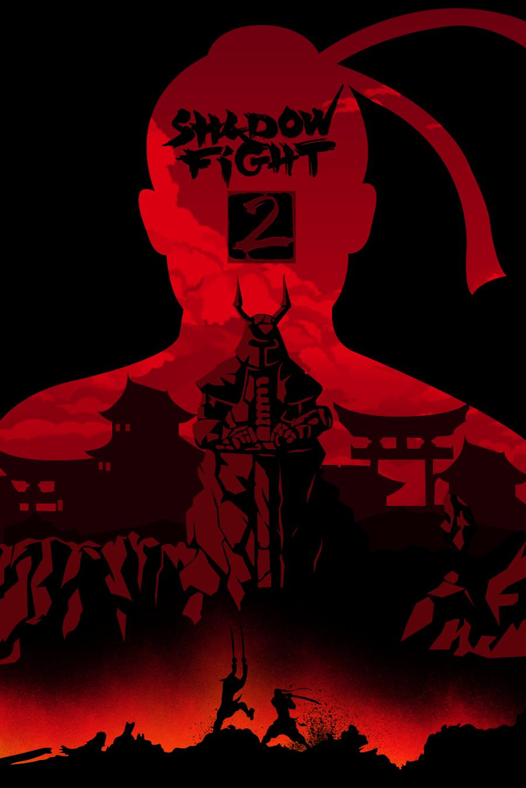

Файтинг РПГ
ТЕЛО ТЕНИ. ДУХ СТАЛИ.
Shadow Fight 2 Сюжет:
Shadow Fight 2 рассказывает историю легендарного воина по имени Тень. Когда-то он был могучим бойцом, но совершил роковую ошибку, открыв Врата Теней и выпустив в мир шестерых опасных демонов. Их сила поглотила его тело, превратив его в живую тень.
Теперь Тени предстоит пройти через шесть различных миров, одолеть демонов и их грозных приспешников, собрать легендарное оружие и доспехи, а также найти способ вернуть себе прежний облик.
На своем пути Тень сталкивается с бесчисленными врагами, раскрывает древние тайны и встречает могущественных союзников. Однако самое сложное испытание еще впереди: ему предстоит сразиться с Титаном — правителем мира, скрывающегося за Вратами Теней. Чтобы победить его и спасти мир, Тень должен стать сильнее, чем когда-либо прежде.
